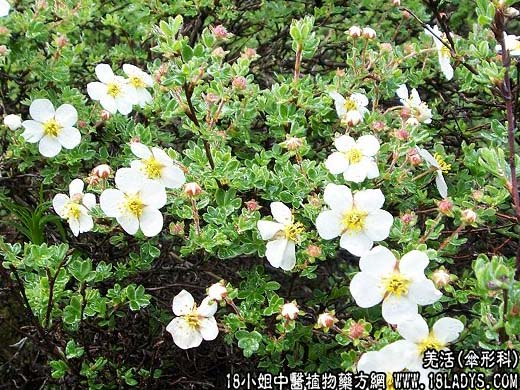

【中药概述】
羌活为伞形科草本植物羌活的根茎。辛、苦，温。归膀胱、肝、肾经。
1．散寒解表：用于外感风寒所引起的发热恶寒、肌表无力、头痛身痛较重之证，如（<此事难知>九味羌活汤）。
2．胜湿止痛：用于风寒湿邪所致的肢节疼痛、半身痹痛等，如（蠲痹汤）。
3．止痉：用于头风头痛、风湿性头痛、脊痛，尤以治太阳头痛为佳，如（<内外伤辨惑论>羌活胜湿汤）。
【药效鉴别】
羌活擅于祛风，外而肌表风寒，有发散解表之效，常用治上半身疼痛和后头部疼痛的引经药。升太阳经和督脉经的阳气。
【临证应用】
（羌蒡蒲薄汤）治流行感冒，上呼吸道感染，扁桃体炎，腮腺炎等。
【药理作用】
挥发油对皮肤真菌有抑制作用；羌活煎剂可治面神经麻痹。
【化学成分】
含挥发油和棕榈酸、硬脂酸、油酸等有机酸及生物碱等。
【用量用法】
3——10g，水煎服。
【使用注意】
血虚痹痛、阴虚头痛慎用。